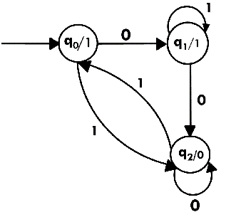
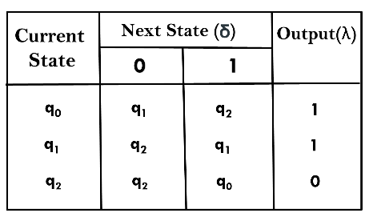
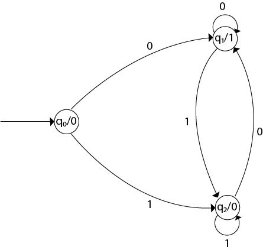
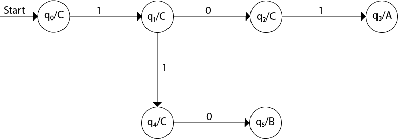
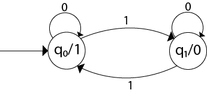
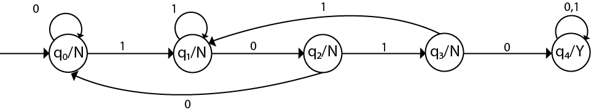

Moore Machine
Moore machine is a finite state machine in which the next state is decided by the current state and current input symbol. The output symbol at a given time depends only on the present state of the machine. Moore machine can be described by 6 tuples (Q, q0, ∑, O, δ, λ) where,
- Q: finite set of states
- q0: initial state of machine
- ∑: finite set of input symbols
- O: output alphabet
- δ: transition function where Q × ∑ → Q
- λ: output function where Q → O
Example 1:
The state diagram for Moore Machine is
Transition table for Moore Machine is:
In the above Moore machine, the output is represented with each input state separated by /. The output length for a Moore machine is greater than input by 1.
Input: 010
Transition: δ (q0,0) => δ(q1,1) => δ(q1,0) => q2
Output: 1110(1 for q0, 1 for q1, again 1 for q1, 0 for q2)
Example 2:
Design a Moore machine to generate 1's complement of a given binary number.
Solution: To generate 1's complement of a given binary number the simple logic is that if the input is 0 then the output will be 1 and if the input is 1 then the output will be 0. That means there are three states. One state is start state. The second state is for taking 0's as input and produces output as 1. The third state is for taking 1's as input and producing output as 0.
Hence the Moore machine will be,
For instance, take one binary number 1011 then
| Input | 1 | 0 | 1 | 1 | |
| State | q0 | q2 | q1 | q2 | q2 |
| Output | 0 | 0 | 1 | 0 | 0 |
Thus we get 00100 as 1's complement of 1011, we can neglect the initial 0 and the output which we get is 0100 which is 1's complement of 1011. The transaction table is as follows:

Thus Moore machine M = (Q, q0, ∑, O, δ, λ); where Q = {q0, q1, q2}, ∑ = {0, 1}, O = {0, 1}. the transition table shows the δ and λ functions.
Example 3:
Design a Moore machine for a binary input sequence such that if it has a substring 101, the machine output A, if the input has substring 110, it outputs B otherwise it outputs C.
Solution: For designing such a machine, we will check two conditions, and those are 101 and 110. If we get 101, the output will be A, and if we recognize 110, the output will be B. For other strings, the output will be C.
The partial diagram will be:
Now we will insert the possibilities of 0's and 1's for each state. Thus the Moore machine becomes:

Example 4:
Construct a Moore machine that determines whether an input string contains an even or odd number of 1's. The machine should give 1 as output if an even number of 1's are in the string and 0 otherwise.
Solution:
The Moore machine will be:
This is the required Moore machine. In this machine, state q1 accepts an odd number of 1's and state q0 accepts even number of 1's. There is no restriction on a number of zeros. Hence for 0 input, self-loop can be applied on both the states.
Example 5:
Design a Moore machine with the input alphabet {0, 1} and output alphabet {Y, N} which produces Y as output if input sequence contains 1010 as a substring otherwise, it produces N as output.
Solution:
The Moore machine will be:
